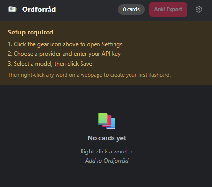
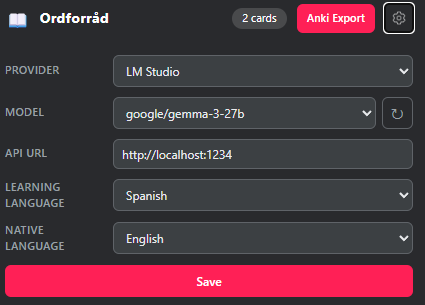
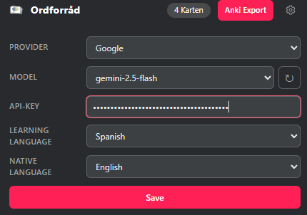
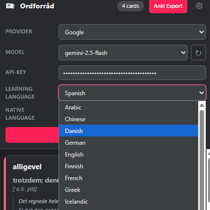
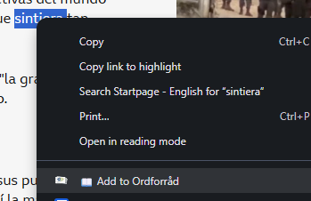
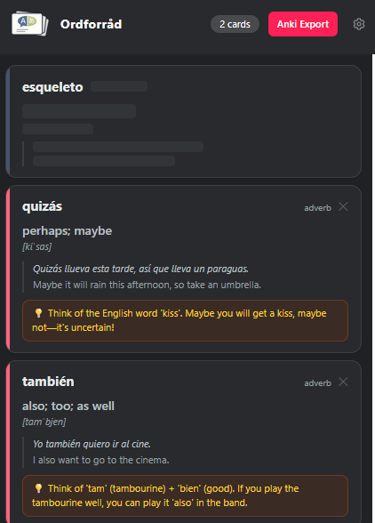
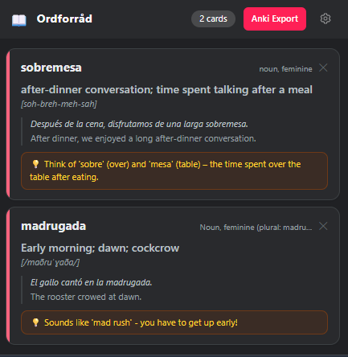

When you open the extension for the first time, you will see this screen. Follow the steps below to get started.

Open Settings
Click the gear icon in the top-right corner to open the settings panel.

Configure an AI provider
Choose one of the supported providers and enter the required credentials:
LM Studio
Local & free. No API key needed. Requires LM Studio running on your machine with a model loaded.
OpenAI
Requires an API key from platform.openai.com.
Anthropic
Requires an API key from console.anthropic.com.
Google AI
Requires an API key from aistudio.google.com.

Select languages & save
Set your learning language (the language you're studying) and your native language (for translations). Then select a model from the dropdown and click Save.

Create your first card
Go to any webpage, select a word, right-click, and choose "Add to Ordforråd" from the context menu. The extension will generate a flashcard in the background. You'll see a notification when it's ready.

The card appears as a placeholder while it is being generated. Once ready, it fills in automatically and you will receive a browser notification. Generation time varies depending on your provider and model.

Review & export
Open the popup to see all your saved cards. Each card shows the word, translation, pronunciation, example sentences, and a memory tip. When you're ready, click Anki Export to download a .apkg file you can import into Anki.
